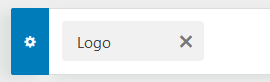

Installer une toute nouvelle application WordPress et s'y connecter
Bravo
Installer une toute nouvelle application WordPress et s'y connecter
Faire afficher la liste des pages. Combien y en a-t-il?
Aller personnaliser le thème puis publier sans rien changer. Ensuite faire réafficher la liste des pages. Combien y en a-t-il?
Installer le plugin "Fakerpress" et faire ajouter 5 PAGES (pas d'articles).
Changer le titre des nouveaux articles pour un titre en français. Se laisser inspirer par les photos de la page.
Créer un menu intitulé "Menu perso" contenant les 5 nouvelles pages. Ne pas choisir d'emplacement pour l'instant.
Changer l'icone du site pour mettre ⭳ le logo fictif. Où doit-on aller?
Changer "Un site utilisant WordPress" pour "Un site qui n'exite pas".
Ajouter un motif d'arrière plan. Mettre le motif ⭳ Sospiri
Ajouter le "Menu perso" comme Widget dans le pied de page.
Activer et personnaliser le thème "Twenty Twenty".
Mettre le logo "⭳ Site Web".
Changer la couleur de fond beige pour une autre couleur. Que se passe-t-il si on utilise une couleur foncée?
Analyser l'option "Gabarit de couverture" pour constater que rien ne change dans la page. Faire Publier et aller modifier la page d'accueil.
Trouver l'option Attributs de page ⇒ Modèle. Choisir le modèle "Gabarit de couverture". Combien y a-t-il de choix?
Ajouter une "Image mise de l'avant" (dans les options de page).
Faire Mettre à jour puis visualiser la page.
Retourner personnaliser le thème. Dans l'option "Gabarit de couverture", changer la couleur... juste pour s'amuser.
Répondre à cette question : Combien ce thème a-t-il d'emplacements possibles pour mettre un menu?
Menus ⇒ Voir tous les emplacements)Mettre le "Secondary Menu" dans l'emplacement "Menu réseaux sociaux" à la place de son emplacement actuel.
Activer et personnaliser le thème "Twenty Nineteen".
Ajouter un logo. Qu'y a-t-il de différent d'avec les autres thèmes ?
Combien y a-t-il d'emplacements pour les menus ?
Installer, activer et personnaliser le thème "Astra".
Ajouter le logo "Fictif". Où se trouve cette option?
Faire en sorte qu'il n'y ait que le logo et le slogan qui s'affichent.
Changer la taille du slogan pour 22px. Où se trouve cette option?
Faire en sorte que le menu soit à gauche en dessous du logo.
Combien de zones de widget peut-on ajouter dans le header?
Défi. Mettre une barre de recherche à droite du menu.
Cliquer sur l'engrenage à gauche de "Logo".  Mettre une couleur de fond semi-transparente ainsi qu'une image.
Aller dans "More settings" (de l'image) et faire en sorte que l'image soit alignée "center top" ou "center bottom".
Agrandir la hauteur de la zone au besoin. Où se trouve cette option?
Publier et visionner la page.
Reproduire le footer ci-dessus.
Combien de zones de widget peut-on ajouter dans le footer?
Publier et visionner la page.
Suite à venir.
{kind=link}
{kind=link}
{kind=link}